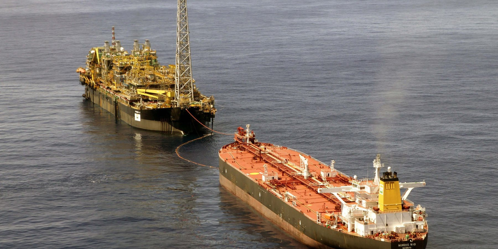
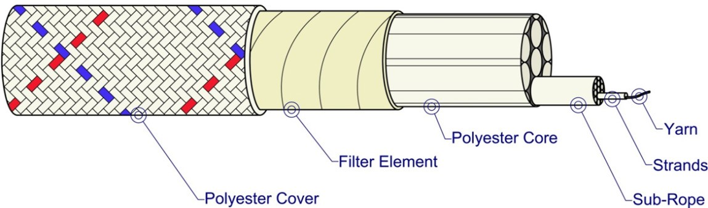
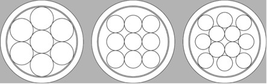

Linha Marine·Ancoragem em águas profundas
Sierra
Subcabos paralelos com capa
Características
Cabo de poliéster com subcabos paralelos, elemento filtrante e capa trançada, para a ancoragem de plataformas offshore. A CSL foi pioneira: com a Petrobras, desenvolveu os primeiros cabos de poliéster para ancoragem em águas profundas.
Aplicações na linha Marine
- Ancoragem de plataformas de petróleo
- Capa de poliéster trançada 32 × 3
- Pernas coloridas identificam material e fabricante
- Etiqueta de aço inox com número de rastreio nas duas pontas
- Alta resistência UV
- Alta resistência a abrasão
- Alongamento Baixo
- Flutuabilidade Negativa
Ficha técnica
Sierra · Subcabos paralelos com capa
Identificação
- Código
- SIE
- Construção
- Subcabos paralelos com capa
- Material
- Poliéster de alta tenacidade
- Núcleo
- 7, 9 ou 12 subcabos paralelos
- Subcabos
- Trançados em 12 pernas, passo longo
- Capa
- Poliéster trançado 32 × 3
Dimensões e propriedades
- Diâmetros
- 80 a 292 mm
- Ruptura mínima até
- 2500 t
Desempenho e manuseio
- Proteção do núcleo
- Elemento filtrante
- Terminações
- Olhais emendados com proteção de poliuretano
- Rastreabilidade
- Etiqueta de aço inox nas duas pontas
- Ensaios
- Ruptura, fadiga, módulo e rigidez, fluência e alongamento, densidade linear
Dados do catálogo técnico da CSL. Valores de ruptura por diâmetro na tabela abaixo.
Construção
O Sierra camada por camada


- Capa de poliésterTrança 32 × 3 que mantém o núcleo redondo e o protege por fora. Pernas coloridas identificam o material e o fabricante do cabo.
- Elemento filtranteImpede a entrada de partículas no núcleo do cabo.
- Subcabos paralelosTrançados em 12 pernas com passo longo, dão alta resistência e torção neutra ao cabo.
- PernasUnião de fios levemente torcidos.
- FiosMultifilamento de poliéster de alta tenacidade com acabamento marítimo.
Dimensionamento
Massa e carga de ruptura por diâmetro
Escolha um diâmetro para ver massa e carga de ruptura, com a seção do cabo desenhada em escala ao lado de uma moeda de R$ 1.
Dados por diâmetro
- Circ.(”)
- Massa Nominal (kg/100m)
- Carga mínima de ruptura (ton)
- Carga média de ruptura (ton)
Seção esquemática da construção, em escala com a moeda.
Sierra · SIE
Tabela técnica
22 diâmetros. Selecione uma linha para ver os valores no quadro acima.
| Diâm.(mm) | Circ.(”) | Massa Nominal (kg/100m) | Carga mínima de ruptura (ton) | Carga média de ruptura (ton) |
|---|---|---|---|---|
| 80 | 10 | 510 | 222 | 242 |
| 88 | 11 | 620 | 268 | 291 |
| 96 | 12 | 740 | 319 | 349 |
| 104 | 13 | 870 | 370 | 404 |
| 112 | 14 | 990 | 430 | 470 |
| 120 | 15 | 1145 | 500 | 546 |
| 128 | 16 | 1280 | 560 | 605 |
| 136 | 17 | 1440 | 630 | 688 |
| 144 | 18 | 1670 | 710 | 776 |
| 152 | 19 | 1910 | 760 | 823 |
| 160 | 20 | 1941 | 800 | 899 |
| 168 | 21 | 2020 | 850 | 929 |
| 176 | 22 | 2180 | 900 | 981 |
| 200 | 25 | 2660 | 1125 | 1223 |
| 208 | 26 | 2890 | 1250 | 1365 |
| 216 | 27 | 3280 | 1400 | 1512 |
| 232 | 29 | 3460 | 1500 | 1632 |
| 240 | 30 | 3850 | 1600 | 1732 |
| 246 | 31 | 4120 | 1750 | 1902 |
| 260 | 33 | 4670 | 2000 | 2172 |
| 276 | 36 | 5340 | 2250 | 2450 |
| 292 | 40 | 5890 | 2500 | 2720 |
Linha Marine
Outros produtos da linha
- Victor · Dupla-Trança Híbrido48 a 264 mm
- Nylon2IN1 · Dupla-Trança Nylon48 a 264 mm
- Circular Nylon64 a 264 mm
- Bravíssimo · HMPE Dupla-Trança48 a 264 mm
- BRAVO12 · 12-Pernas HMPE10 a 96 mm
- MFP8 · 8-Pernas Polipropileno Multifilado18 a 144 mm
- MFP12 · 12-Pernas Polipropileno Multifilado18 a 144 mm
- PA12 · 12-Pernas Nylon18 a 144 mm
- PES12 · 12-Pernas Poliéster18 a 144 mm
- C12 · 12-Pernas Composite18 a 144 mm
- PP12 · 12-Pernas Polipropileno Monofilado18 a 144 mm
- PB12 · 12-Pernas Polyblend18 a 144 mm
- PES8 · 8-Pernas Poliéster18 a 144 mm
- PA8 · 8-Pernas Nylon18 a 144 mm
- C3 · 8-Pernas Composite18 a 144 mm
- PP8 · 8-Pernas Polipropileno Monofilado18 a 144 mm
- PB8 · 8-Pernas Polyblend18 a 144 mm
- PB3 · 3-Pernas Polyblend4 a 48 mm
- PA3 · 3-Pernas Poliamida (Nylon)3 a 48 mm
- PES3 · 3-Pernas Poliéster3 a 48 mm
- PP3 · 3-Pernas Polipropileno Monofilado4 a 48 mm
- MFP3 · 3-Pernas Polipropileno Multifilado4 a 48 mm
- BRAVO8 · 8-Pernas HMPE4 a 96 mm
- Circular HMPE48 a 264 mm
Precisa do Sierra no seu projeto?
Nossa equipe, de vendas à engenharia, ajuda a especificar diâmetro, comprimento e terminações.